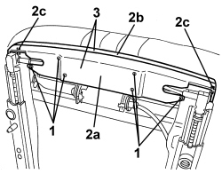

7045A42 GUARD (ONE) FOR FRONT SEAT, LEFT OR RIGHT - R.R.
- Path
- Procedures > 70 FITTINGS > 7045 FRONT SEATS > 7045A FRONT SEAT ASSEMBLY > 7045A42 GUARD (ONE) FOR FRONT SEAT, LEFT OR RIGHT - R.R.
- Kind
- repair procedure (removal / refitting; the operation number is the code)
- Applies to
- all engines; all production periods
- Interactive page
- https://sloeber94.github.io/elrnDB-aBrrSpdr/en/#/946004140
Applies to: all engines; all production periods; only with equipment: Electric seats
 Removing
Removing
 Refitting
Refitting- Raise the seat until it is in the end of travel position.
Op. 7045A10 FRONT SEAT (ONE), LEFT OR RIGHT - R.R.
1. Undo the front guard fixing bolts.
2. Separate the two half casings (2a) and (2b) for the guard releasing the retainers (2c).
3. Keep the retainer assembly.

Applies to: all engines; all production periods; only with equipment: Electric seats
Refitting
Removing- Check that the front guard is not damaged.
- Position the two half casings for the guard and attach the retainers.
- Tighten the guard fixing bolts.
Op. 7045A10 FRONT SEAT (ONE), LEFT OR RIGHT - R.R.
- Lower the seat into the correct position.